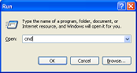
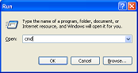
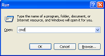
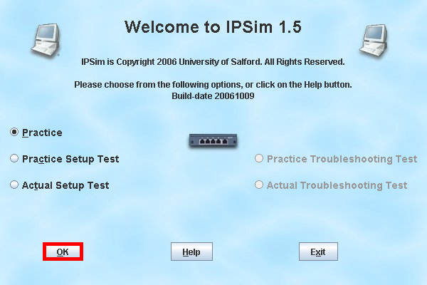
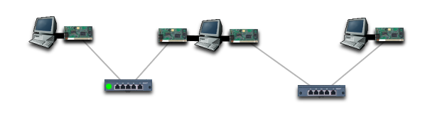
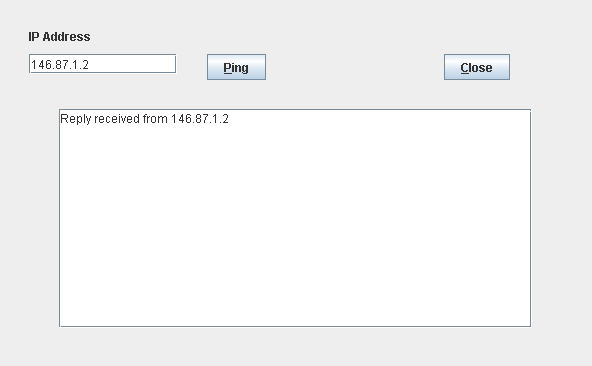
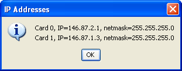
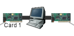
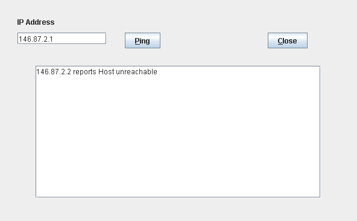
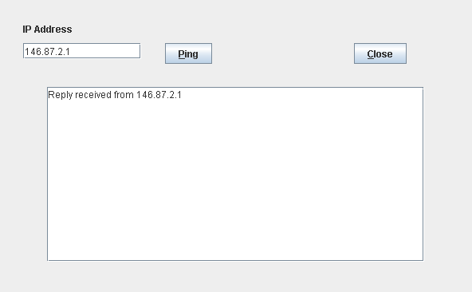

If you are running IPSim on one of the machines in the CSE labs, you can move on to the next section, as Java is already installed. Also, if you have already installed Java on your machine, you can move on to the next section.
If you are unsure as to whether you have installed Java, go to Start->Run, then type 'cmd' in the box that appears.

In the window that appears, type this, exactly: java -version
You should see something like the following, and the version number should be at least 1.5.
C:\Documents and Settings\home>java -version
java version "1.5.0_07"
Java(TM) 2 Runtime Environment, Standard Edition (build 1.5.0_07-b03)
Java HotSpot(TM) Client VM (build 1.5.0_07-b03, mixed mode, sharing)If you do this on Linux and see gij or kaffe, then you haven't got Java installed, but something similar to Java. Find out how to install Sun Java on your system. The installation method varies slightly for each Linux distribution.
The installation instructions are on Sun Microsystems' website, but I have described them for Windows here. They may have changed since this writing, please tell us about this, by emailing devel@ipsim.com.
Navigate to www.ipsim.com with a web browser and click on ipsim.jar. It should open with Java. If it opens with WinZIP instead or some other tool, save it, then right-click on it from Explorer to open with Java. If you want to use it when you are offline then you will need to save it anyway.
When you have launched IPSim, click on Ok in the initial dialog:

Click the "Download Configuration" icon. When prompted, enter 'help0'. You should see a display like this:

Right-click on the computer on the left of the display, and select Ping from the menu that appears.
In the box that appears, type 146.87.1.2, and click the Ping button. You should see "Ping successful".

You just made the computer on the left 'ping' the computer in the centre of the display. The computer on the left has the IP address 146.87.1.1. You can verify this by right-clicking on the computer and selecting "List IP Addresses".
The third computer from the left is a gateway, or router, as it has two network cards. If you list its IP addresses, you will see two entries:

So, how can you tell which network card has each IP address? The list of IP addresses includes card numbers. If you hover your mouse over a card, you will see its card number, and you can match the two.

So, you can see that Card 1 is the card on the left, so the card on the left of the computer in the centre of the display has the IP address 146.87.1.2. That is the address that we pinged earlier. So we know that that part of the network is working.
Now use the same techniques to discover the IP address of the right-hand network card on the computer in the centre, and the IP address of the network card on the computer on the far right of the display.
You should find that they are 146.87.2.1 and 146.87.2.2 respectively.
From the computer with the IP address 146.87.2.2, ping the computer with the IP address 146.87.2.1.

The first thing to check is that everything is physically connected, which we can see at a first glance. You can check to see which objects are connected to each other by dragging them around with the mouse.
So there are two likely faults. One, or both, of the computers are configured incorrectly, or the hub has no power. The easiest fault to look for is the power to the hub. A powered-up hub has a green light on it. This one does not.
Right-click on the hub, and select "Toggle Power". The green light should now appear.
Now repeat the ping that you performed earlier.
